This project started, indirectly, after many years of the same fractal wallpapers rotating on my desktop. My three-year-old daughter enjoyed looking at them, but after a detailed examination of my 500 wallpapers, it turned out she only liked about five specific pink fractals. A Google search for "pink fractals" was surprisingly barren of good options.
That got me thinking about how to procedurally generate a diverse set of beautiful fractals, subject to constraints like color, shape, or rendering style. Classification was one of the first big successes of modern convolutional networks, and given enough training data, a network can do quite a good job of answering "how good is this wallpaper, on a scale of 1 to 4?" Coupled with a fairly extensive search and rendering engine, that became the first version of the fractal-wallpapers project. Here is a terse outline.
First, pick a starting escape-time fractal.
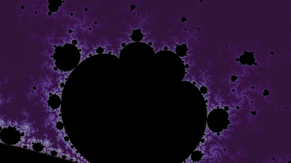
1. start at the boundary
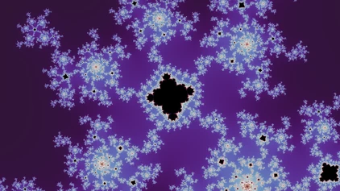
2. find a nearby minibrot
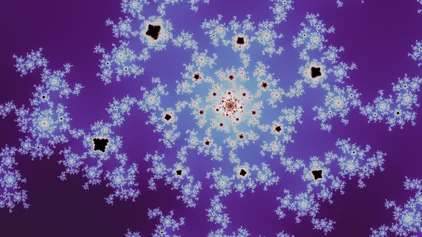
3. descend
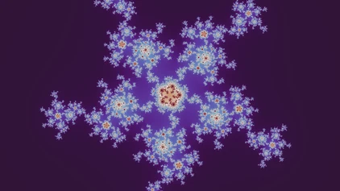
4. switch to its Julia set
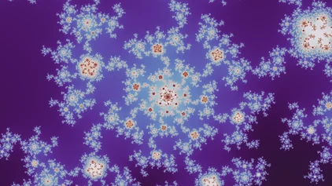
5. descend
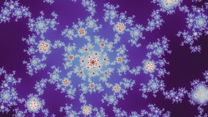
6. descend
Then, starting at a point on the boundary, walk deeper, guided by a location judge trained to estimate how beautiful the geometry is at each location. Maneuvers like "switch to the Julia set for this point and descend it from the top" or "find a nearby minibrot" turn out to be very useful for finding good locations.
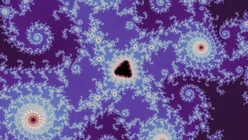
the location
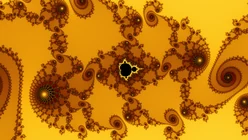
smooth
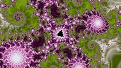
tia
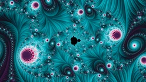
stripe
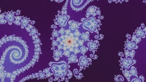
the location
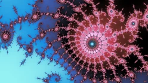
smooth
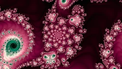
tia
At each location, search across palettes and rendering modes for the most beautiful wallpapers, according to a judge trained on explicit labels.
Finally, curate a gallery of a given size or property from all the candidates, aiming for diversity across many axes: color, geometry, palette, rendering mode, and a cap on how many spirals get in.
And here is the final gallery, as chosen by my daughter.
Fractal explorer
Once I was reasonably happy with the gallery, I thought about putting it online as a simple zip of wallpapers. But the Rust code behind fractal-wallpapers carried over to the web almost directly, as what is now the fractal explorer. It was delightful to move around and explore the areas around the wallpaper locations, and that motivated a more polished writeup and interface than "here's a zip of 1,000 fractal wallpapers."
Deep zoom
Originally, I wasn't planning to handle anything beyond 64-bit floating point. The whole point of the gallery is that the search is automatic and fast, so it can try a vast number of locations and keep the best. But some of the most beautiful fractal artwork lives in the deepest parts of these fractals. So although most of the gallery sits in the shallow regions, I eventually extended the renderer to work much deeper, though not as deep as dedicated deep-zoom renderers like Kalles Fraktaler and Fraktaler 3. Along the way I learned a lot of fractal mathematics, including properties that are directly useful for fractal artwork, like the minibrot twins behind automatic descents and Tan Lei's similarity between the Mandelbrot and Julia sets. Videos that zoom into a location are also a great way to explore the detail around it:
Figure pendingA video that zooms into one location, to come.
Future work
If there are features you'd like, or bugs to report, open an issue on GitHub: fractal-website for the explorer and this site, and fractal-wallpapers for the wallpaper pipeline. I haven't worked out how to take gallery submissions yet, but every link on this site should work and be freely shareable.